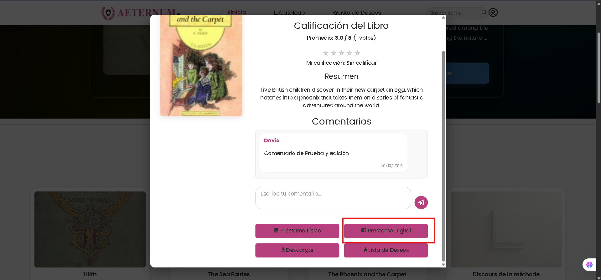
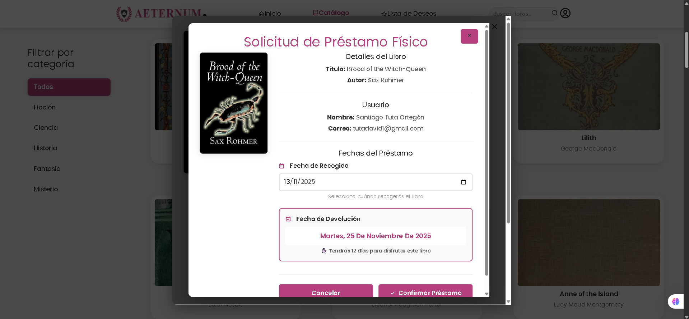
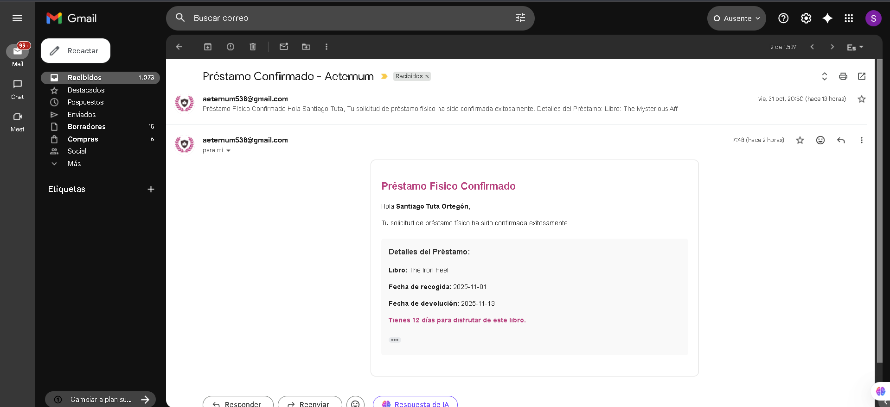
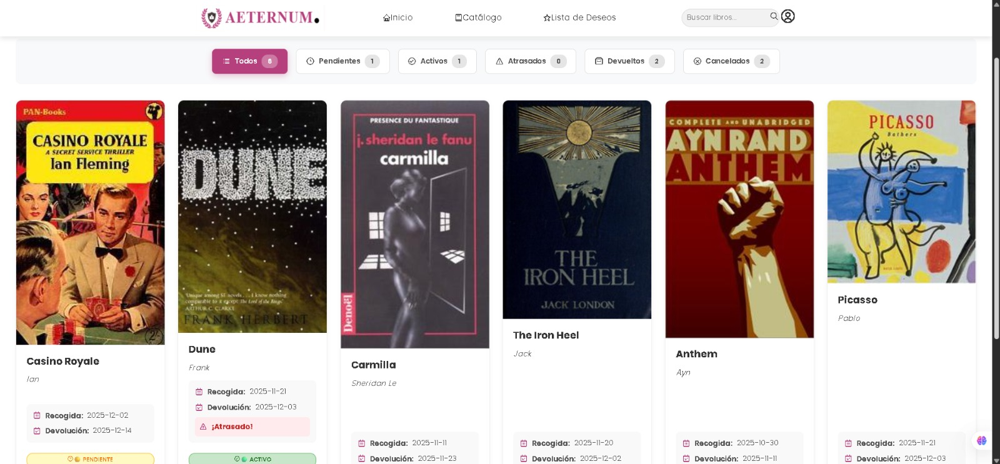
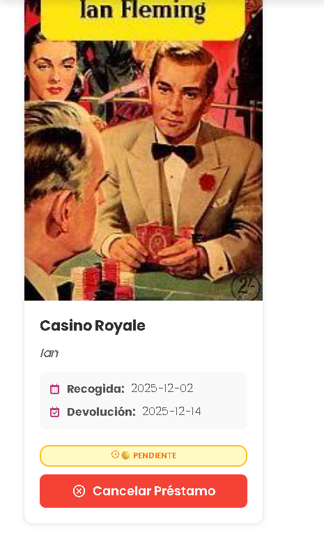

Sistema de Préstamos#
Aeternum ofrece dos tipos de préstamos: digitales (lectura online instantánea) y físicos (recogida en biblioteca).
Nota
Ambos sistemas están integrados para ofrecer la mejor experiencia al usuario.
Préstamos Digitales
Los préstamos digitales permiten acceso inmediato a la versión digital de un libro para leerlo en línea.
Registrar Préstamo Digital#
Endpoint: POST /prestamos/digital
Registra un nuevo préstamo digital cuando un usuario accede a leer un libro online.
¿Qué hace?
Verifica que el usuario esté autenticado
Comprueba disponibilidad de copias digitales
Registra el préstamo en el sistema
Redirige al lector online
Registra estadísticas de lectura
Datos a enviar:
{
"openlibrary_key": "/works/OL45883W",
"book_title": "El Principito",
"book_author": "Antoine de Saint-Exupéry"
}
Respuesta exitosa:
{
"message": "Préstamo digital registrado exitosamente",
"prestamo_id": 123,
"url_lectura": "https://aeternum.com/leer/OL45883W",
"fecha_inicio": "2025-01-15T14:30:00",
"fecha_expiracion": "2025-01-27T14:30:00"
}
{kind=link}

Características:
Acceso inmediato sin espera
Duración: 12 días por defecto
Sin límite de copias (si
copias_digitales_disponibles = -1)Registro de tiempo de lectura
Marcadores automáticos de progreso
Posibles errores:
Sin copias disponibles: «No hay copias digitales disponibles en este momento»
Límite alcanzado: «Has alcanzado el límite de préstamos simultáneos (3)»
Libro no disponible digitalmente: «Este libro no está disponible en formato digital»
📦 Préstamos Físicos#
Los préstamos físicos permiten solicitar un libro para recogerlo en la biblioteca.
Solicitar Préstamo Físico#
Endpoint: POST /prestamos-fisicos/solicitar
Crea una solicitud de préstamo físico de un libro.
¿Qué hace?
Verifica disponibilidad de copias físicas
Valida que el usuario no tenga préstamos vencidos
Comprueba el límite de préstamos simultáneos
Crea la solicitud con estado «pendiente»
Envía correo de confirmación al usuario
Notifica al bibliotecario
Datos a enviar:
{
"openlibrary_key": "/works/OL45883W",
"book_title": "El Principito",
"book_author": "Antoine de Saint-Exupéry",
"fecha_recogida": "2025-01-20"
}
Respuesta exitosa:
{
"message": "Solicitud de préstamo creada exitosamente",
"prestamo_id": 456,
"estado": "pendiente",
"fecha_recogida": "2025-01-20",
"fecha_devolucion": "2025-02-01",
"instrucciones": "Presenta tu identificación en el mostrador de préstamos."
}
{kind=link}

Correo de confirmación enviado:
{kind=link}

Validaciones:
Usuario con préstamos vencidos: No puede solicitar nuevos
Límite de 3 préstamos físicos simultáneos
Fecha de recogida debe ser futura (mínimo 1 día de anticipación)
Debe haber copias físicas disponibles
Posibles errores:
Sin copias: «No hay copias físicas disponibles»
Préstamos vencidos: «Tienes préstamos vencidos. Devuélvelos para continuar»
Límite alcanzado: «Has alcanzado el límite de 3 préstamos físicos simultáneos»
Fecha inválida: «La fecha de recogida debe ser al menos 1 día en el futuro»
Ver Mis Préstamos Físicos#
Endpoint: GET /prestamos-fisicos/mis-prestamos
Lista todos los préstamos físicos del usuario actual.
Filtros opcionales:
estado: pendiente | activo | devuelto | cancelado | retrasadopage: Número de páginalimit: Resultados por página
Ejemplo de URL:
GET /prestamos-fisicos/mis-prestamos?estado=activo&page=1
Respuesta:
{
"total_prestamos": 8,
"prestamos_activos": 2,
"prestamos_retrasados": 0,
"prestamos": [
{
"prestamo_id": 456,
"book_title": "El Principito",
"book_author": "Antoine de Saint-Exupéry",
"openlibrary_key": "/works/OL45883W",
"fecha_solicitud": "2025-01-15T14:30:00",
"fecha_recogida": "2025-01-20",
"fecha_devolucion": "2025-02-01",
"estado": "pendiente",
"dias_restantes": 5,
"puede_cancelar": true
},
{
"prestamo_id": 455,
"book_title": "Cien Años de Soledad",
"book_author": "Gabriel García Márquez",
"openlibrary_key": "/works/OL123456W",
"fecha_solicitud": "2025-01-10T09:00:00",
"fecha_recogida": "2025-01-12",
"fecha_devolucion": "2025-01-24",
"fecha_recogida_real": "2025-01-12T10:30:00",
"estado": "activo",
"dias_restantes": 8,
"puede_cancelar": false
}
]
}
{kind=link}

Estados explicados:
🟡 Pendiente: Libro reservado, esperando que lo recojas
🟢 Activo: Libro en tu poder, debes devolverlo antes de la fecha
🔴 Retrasado: Pasó la fecha de devolución
⚪ Devuelto: Préstamo completado
❌ Cancelado: Solicitud cancelada
Cancelar Préstamo Físico#
Endpoint: PUT /prestamos-fisicos/cancelar/{prestamo_id}
Permite al usuario cancelar un préstamo físico.
¿Cuándo se puede cancelar?
Solo préstamos en estado «pendiente» (antes de recoger el libro)
No se puede cancelar después de recoger el libro
Respuesta exitosa:
{
"message": "Préstamo cancelado exitosamente",
"prestamo_id": 456,
"libro_disponible_nuevamente": true
}
{kind=link}

Posibles errores:
Ya recogido: «No puedes cancelar un préstamo activo. Debes devolverlo en biblioteca»
No encontrado: «El préstamo no existe»
Ya procesado: «Este préstamo ya fue devuelto o cancelado»
🔔 Notificaciones y Recordatorios#
El sistema envía notificaciones automáticas por correo:
Notificaciones por Correo#
Tipos de notificaciones:
Confirmación de solicitud (inmediato)
Detalles del libro
Fecha de recogida
Confirmación de entrega (cuando el bibliotecario marca como «activo»)
Fecha de devolución
Consecuencias del retraso
Alerta de retraso (si pasa la fecha)
Préstamo vencido
Posible penalización
Urgencia en devolución
📊 Estadísticas de Préstamos#
Dashboard Personal#
Endpoint: GET /prestamos/estadisticas
Obtiene estadísticas personales de préstamos del usuario.
Respuesta:
{
"total_prestamos": 23,
"prestamos_completados": 20,
"prestamos_activos": 3,
"prestamos_retrasados": 0,
"libros_favoritos": ["El Principito", "Cien Años de Soledad"],
"tiempo_lectura_total_horas": 45,
"racha_actual_dias": 15,
"insignias": ["Lector frecuente", "Sin retrasos"]
}
Políticas de Préstamos
Límites y Restricciones#
Política |
Valor |
|---|---|
Préstamos digitales simultáneos |
3 libros |
Préstamos físicos simultáneos |
3 libros |
Duración préstamo digital |
12 días |
Duración préstamo físico |
12 días (desde recogida) |
Tiempo para recoger |
3 días (luego se cancela automáticamente) |
Renovación |
1 renovación de 12 días más (si no hay reservas) |
Penalización por retraso |
7 días sin poder solicitar nuevos préstamos |
🔒 Notas de Seguridad#
Advertencia
Protección de datos:
Los préstamos son privados (solo el usuario y bibliotecarios pueden verlos)
El historial se mantiene por tiempo indefinido
Los datos de lectura (progreso, tiempo) son confidenciales
Las notificaciones no revelan información sensible
Truco
Recomendaciones:
Devuelve libros a tiempo para mantener tu historial limpio
Cancela reservas si cambias de opinión (libera el libro para otros)